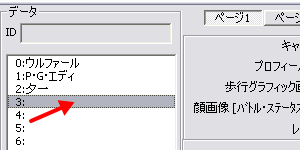
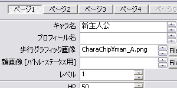

可変データベース
右のようなウィンドウが表示されます。

【目標】
新しく主人公を増やし、そのデータを保存します。
| 【1】 可変データベース 右のようなウィンドウが表示されます。 |
|
| 【2】 「タイプ」が「主人公ステータス」に なっていることを確認してください。 （もしなっていなければ、 「0:主人公ステータス」をクリック） |
 |
| 【3】 「データ」の空いているところを クリックして下さい |
 |
| 【4】 「キャラ名」を入力して下さい その他の項目は後からでも入力できます ※その他の項目の設定方法は、 ＜設定編＞の関連項目をご覧下さい。 |
 |
【5】
更新ボタンかＯＫボタンを押して下さい。
新しく主人公が保存されました。
＜執筆者：さくらば結城＞